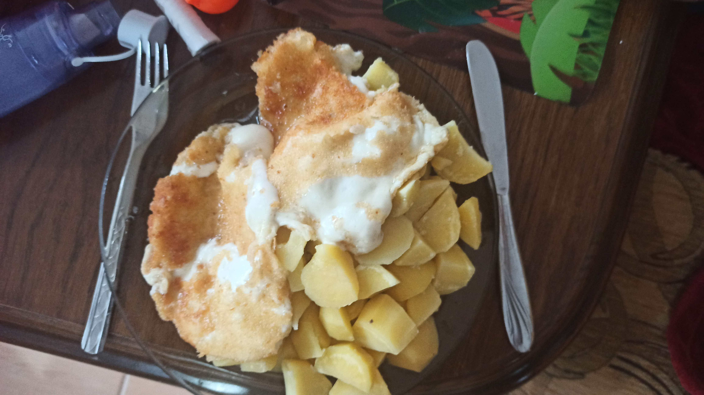
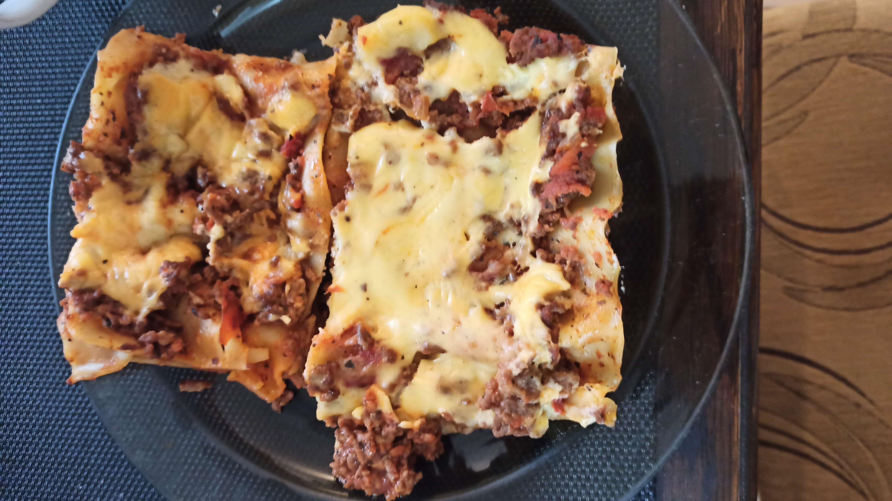

Moje "úžasná" tvorba
Vaření:

Tohle je jedno z mých prvních jídel, které jsem připravoval
(kdyby jste to nepoznali, je to smažený sýr)
Dorta z jogurtu, na které asi nešlo nic zkazit

Jamal..

Lasagne byly moje nejlepší jídlo, co jsem kdy udělal.

Tohle je jedno z mých prvních jídel, které jsem připravoval
(kdyby jste to nepoznali, je to smažený sýr)
Dorta z jogurtu, na které asi nešlo nic zkazit
Jamal..